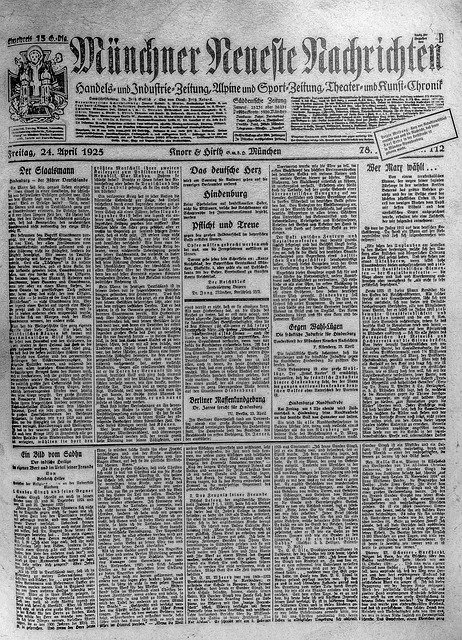

Наукова стаття - Що це таке, визначення та поняття
Зміст
- Характеристика наукової статті
- Структура наукової статті
- Рекомендації щодо написання наукової статті
Наукова стаття - це письмова та опублікована доповідь, яка збирає інформацію, що описує результати проведеного розслідування. Метою його публікації є захист або тиражування теорії, а також просування знань.
Отже, наукова стаття - це стаття або письмова доповідь, яка була опублікована в науковому журналі, організації тощо. Ця стаття, в свою чергу, складається з інформації, зібраної в ході досліджень, проведених науковим дослідником, як правило, з академічного світу.
Її метою є висловити схвалення певної теорії чи статті, а також її копію. Все це з метою пропаганди знань та прогресу науки.
Характеристика наукової статті
Знаючи, що таке наукова стаття, ми переходимо до деталізації тих характеристик, які роблять статтю науковою.
Серед характеристик, представлених науковою статтею, слід виділити наступне:
- Написано офіційною мовою.
- Її довжина ширша, ніж, наприклад, думки.
- Читання включає наукові докази, що підтверджують гіпотезу.
- Зазвичай він розробляється на певну наукову тему.
- Показує результати, отримані за цією темою.
- Результати повинні бути достовірними та надійними.
- Їхня місія - донести знання до академічного світу.
- Ви повинні дотримуватися правил публікації.
Структура наукової статті
Розділи, що складають наукову статтю, докладно описані нижче.
- Назва та автори.
- Реферат або резюме.
- Методологія.
- Результати
- Обговорення.
- Список літератури.
За розділами:
- Назва та автори: Включає центральний заголовок теми, дату публікації, а також авторів, які проводять дослідження.
- Короткий зміст або реферат: Стаття повинна містити короткий зміст, що стосується теми, на якій ми збираємось зосередити дослідження.
- Методологія: Розслідування детальне, а також методологія, обрана для його проведення.
- Результати: Відображаються результати, отримані після тестів.
- Обговорення: У існуючій літературі продемонстровано вирішення цієї проблеми.
- Список літератури: Включає всі посібники, статті та інші звіти, які були використані для складання статті та вилучення інформації.
Залежно від журналу, в якому ви хочете бути опублікованим, стаття повинна дотримуватися ряду інструкцій та правил публікації, а також переглядів.
Рекомендації щодо написання наукової статті
Щоб підготувати наукову статтю, ми повинні знати, що існує ряд критеріїв, яких, на думку ЮНЕСКО, слід дотримуватися. Для вищезазначеної організації всі наукові статті повинні відображати точність, чіткість і стислість.
Однак, крім цього, є ще ряд рекомендацій, які можуть допомогти читачеві написати наукову статтю.
- Структуруйте центральну ідею та чітко її визначте.
- Використовуйте слова, які не бентежать читача.
- Будьте точними та об’єктивними у своїх даних.
- Додайте графіку та ілюстрації, що підтримують текст.
- Розділіть написане на короткі абзаци, які не ускладнюють читання.
- Мова, яка використовується, хоча і проста, але повинна бути офіційною та суворою.